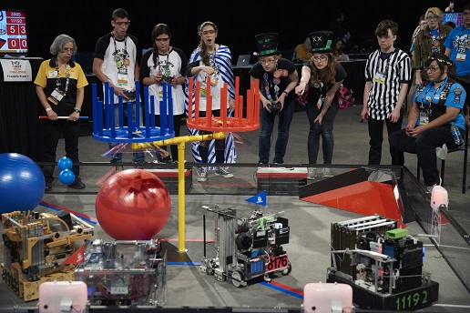
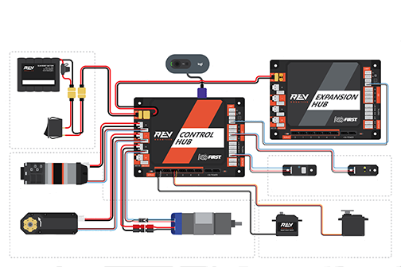
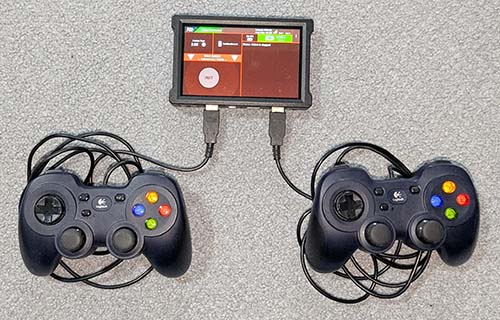
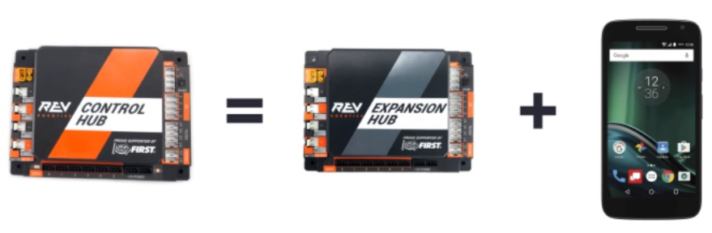
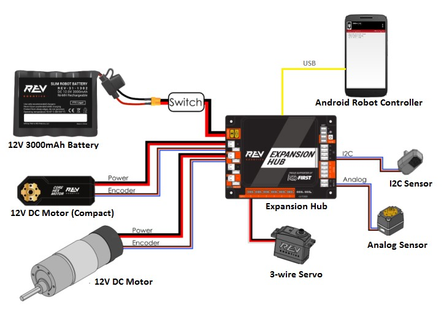

Control System Introduction
FIRST Tech Challenge Robots
FIRST Tech Challenge robots must play a challenging game that changes every year. In the VELOCITY VORTEX game robots could shoot softball size plastic balls into the blue or red center goals. During the end of the match they could lift and place a blue or red yoga ball onto the center goal structure.

(Photo courtesy of Dan Donovan, ©2017 Dan Donovan / www.dandonovan.com)
Point-to-Point Control System
FIRST Tech Challenge uses Android devices to control its robots. During a competition, each team has two Android devices. Android devices can communicate with each other over a wireless connection.

One Android device is mounted onto the robot and is called the Robot Controller. In most cases, the ROBOT CONTROLLER is the REV Robotics Control Hub. The Robot Controller acts as the “brains” of the robot. It does all of the thinking for the robot and tells the robot what to do. It consists of an Android device running the Robot Controller app. Many Teams will also connect a REV Robotics Expansion Hub for additional ports to connect motors, servos and sensors to the ROBOT.
A second Android device sits with the team drivers and has one or two gamepads connected. This second device is known as the DRIVER STATION. The DRIVER STATION is like a remote control that you might use to control your television. The DRIVER STATION allows a team to communicate remotely (using a secure, wireless connection) to the Robot Controller and to issue commands to the Robot Controller. The DRIVER STATION is usually a REV Robotics Driver Hub running the Driver Station app.
Important
Only the REV Control Hub and the REV Driver Hub are officially supported. An Android smartphone is legal to use in competition, but it is not supported. Teams who use one are responsible for all of their own testing and troubleshooting.
REV Robotics Control Hub and Expansion Hub
The REV Robotics Control Hub and the Expansion Hub are the electronic modules that lets the Robot Controller talk to the robot’s motors, servos, and sensors. The Robot Controller is integrated into the Control Hub, and communicates with the Expansion Hub through a serial connection.
The Control Hub and Expansion Hub are also connected to a 12V battery which is used to power the Control Hub, the Expansion Hub, the motors, the servos and sensors.

REV Robotics Driver Hub
The REV Robotics Driver Hub is the electronic module that the team uses to control the ROBOT. Teams can use the Driver Station app to select and run various programs. One or more gamepads are connected to the Driver Hub and are used by the team to move the robot around the field and operate its various mechanisms.

REV Driver hub with two Logitech gamepads attached
AUTO vs. TELEOP
A FIRST Tech Challenge match has an Autonomous (AUTO) period and a Teleoperated (TELEOP) period. Teleoperated is a fancy word for remote controlled.
In the AUTO phase of a match the robot operates without any human input or control. In the TELEOP phase, the robot can receive input from up to two human drivers. Typically one driver is focused on moving the robot around the field and one driver operates the various mechanisms of the robot such as a ball launcher.
What’s an OpMode?
During a typical FIRST Tech Challenge match, a team’s robot has to perform a variety of tasks in an effort to score points. For example, a team might want their robot to follow a white line on the competition floor and then score a game element (such as a ball) into a goal autonomously during a match. Teams will create an “OpMode” (which stands for “operational mode”) to specify the behavior for their robot.
An OpMode is a computer program that is used to customize the behavior of a competition robot. The Robot Controller can execute a selected OpMode to perform certain tasks during a match.
Typically one OpMode is run during the AUTO phase of the match and a second OpMode is run during the TELEOP phase. Teams might have multiple AUTO OpModes that do different things depending on where on the field the robot will start the match.
Teams who are participating in FIRST Tech Challenge have several of programming tools that they can use to create their own OpMode. Teams can use a visual (“drag and drop”) programming tool called the Blocks Programming Tool to create their OpModes. Teams can also use the Java programming language via the OnBot Java Programming Tool or Google’s Android Studio to create their OpModes.
See Choosing a Programming Tool for more information.
Android Smartphones
The REV Driver Hub and REV Control Hub are the only officially supported control system devices.
Teams may opt to use an Android smartphone as their DRIVER STATION, ROBOT CONTROLLER or both. Due to unpredictable variations in Android software across different manufacturers and updates, the REV Robotics Control Hub and Driver Hub are the only officially supported devices for the control system.
Caution
Teams choosing to use an Android phone bear the sole responsibility for testing and verifying its compatibility, functionality, and performance.
It is known that some phones do not support manually changing the Wi-Fi channel. Some events including FIRST Championship assign each robot to a Wi-Fi channel to spread teams among the available channels and to avoid Wi-Fi channels in use by the event or the public.
Android 10 or newer is important for ensuring that 802.11w protected frames (a network security feature) is supported. Android phones that used to be legal may not be able to be upgraded to Android 10.
Ensure your phone supports USB On-The-Go (or OTG).
Flagship Samsung phones seem to be well supported, as well as the Samsung A10.
For a DRIVER STATION phone ensure the FTC Driver Station App is cleanly installed. See Updating the Driver Station App. You will need an OTG adapter and a USB hub to connect gamepads.
For a ROBOT CONTROLLER phone ensure the Robot Controller App is cleanly installed. See Updating the Robot Controller App. You will need an OTG adapter and a USB A to USB Mini cable to connect to a REV Expansion Hub.

A Control Hub can be replaced by an Expansion Hub and an Android phone
Teams who use an Android smartphone as their ROBOT CONTROLLER will need a REV Robotics Expansion Hub to connect motors, servos and sensors. The smartphone is connected to the Expansion Hub via a USB-A to USB-Mini cable and an OTG adapter.
